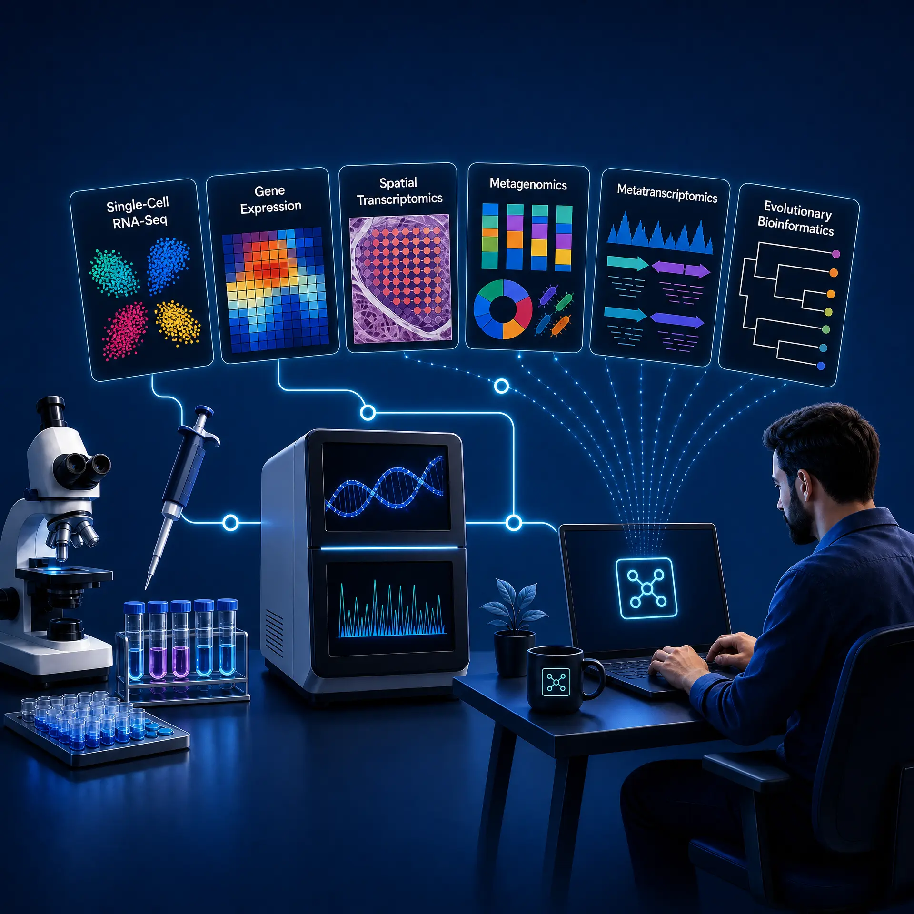

The
Omics Hub
A bioinformatics workflow hub with step-by-step guides for the Linux command line, HPC clusters, Conda environments, and single-cell RNA-seq analysis. Built for biologists learning computational methods.
Explore Tutorials →
A Practical Learning Environment for Computational Biology
Learn the reasoning behind every workflow.
The Omics Hub helps biologists move from a research question to a reproducible computational analysis. Each guide explains the biological context, the required inputs, the commands, the expected results, and the limitations that should shape interpretation.
01 · Understand
Start with the method
Build the concepts first: files, data formats, quality control, statistics, and the assumptions behind each analysis.
02 · Reproduce
Work step by step
Use documented environments, practical commands, expected outputs, and troubleshooting guidance to repeat a workflow safely.
03 · Interpret
Connect output to evidence
Learn what a result supports, what it cannot prove, and which decisions require biological and statistical expertise.
New to computational biology? Follow the structured learning path before choosing a specialization.
Start the learning path →Master Computational Biology and Bioinformatics
Welcome to the premier resource for biological data science. The Omics Hub provides comprehensive, reproducible, and highly technical tutorials designed specifically for researchers. From foundational Linux command-line skills and High-Performance Computing (HPC) cluster management, to advanced single-cell RNA-seq (scRNA-seq), metagenomics, and multi-omics integration workflows. Learn how to deploy modern pipelines using Nextflow and Snakemake, analyze spatial transcriptomics data, and leverage AI agents to accelerate your genomic discoveries.
Structured Curriculum
What We Cover
Our tutorials span the complete journey from computational foundations to advanced multi-omics analysis. Each topic area builds on the previous one, and every guide is designed to be followed hands-on with real data and reproducible environments.
Foundations
Data formats, quality control, statistics, R, Python, Git, and experimental design for bioinformatics.
12 tutorialsLinux, HPC and Workflows
Shell scripting, Slurm job scheduling, Conda environments, Snakemake pipelines, and containerization.
10 tutorialsSingle-Cell and Spatial
From raw 10X reads to clustering, annotation, trajectory analysis, multi-modal integration, and spatial transcriptomics.
15 tutorialsOmics and AI
Metagenomics, metatranscriptomics, evolutionary genomics, WES pipelines, and AI-driven agentic bioinformatics.
21 tutorialsFeatured Tutorials
Start with these essential guides across different skill levels and topics.

Computer and Data Fundamentals for Biologists
Learn how computers store, process, and move biological data before using Linux, HPC, and omics workflows.
Read tutorial →
Conda Environment Setup
Install Miniforge, create isolated environments, and manage bioinformatics packages reproducibly.
Read tutorial →
HPC Basics: Clusters, Nodes and Scheduling
Understand cluster architecture, connect via SSH, navigate modules, and submit your first Slurm job.
Read tutorial →
Introduction to Single-Cell RNA-seq
Understand cell barcoding, UMIs, droplet platforms, and the computational steps from raw reads to a count matrix.
Read tutorial →
Metagenomics: Taxonomic Classification
Profile microbial communities from shotgun reads using Kraken2, Bracken, and Krona for interactive visualization.
Read tutorial →
AI Agents for Bioinformatics Workflows
Build autonomous agents that plan, execute, and validate multi-step bioinformatics pipelines using LLMs.
Read tutorial →Why The Omics Hub
Every tutorial on this site is written by a researcher who has run these exact workflows on real biological data. The guides are not adapted from documentation pages or generated from templates. They come from years of hands-on analysis in academic and clinical research environments.
58
In-depth tutorials
15
Topic categories
800+
Words per guide
100%
Hands-on, reproducible
Tested on Real Data
Every command is verified with specific software versions on Ubuntu 24.04. Expected outputs are shown so you know when something goes wrong.
Structured Learning Path
Tutorials are organized into a logical sequence. The Start Here page maps prerequisites so you never skip a critical concept.
Built for Biologists
Written for researchers transitioning into computational work. No CS degree assumed. Biological context comes first, code comes second.
Meet the Author: Abbasi N, PhD
Computational Biologist & Data Scientist
Welcome to The Omics Hub. I hold a Ph.D. in Bioinformatics and specialize in single-cell transcriptomics, metagenomics, and HPC cluster management. I built this platform because I noticed a massive gap between academic theory and practical, command-line execution in biological research.
Every tutorial on this site is born from real-world challenges I've solved in the lab. Whether you are struggling with Seurat integration, debugging a Nextflow pipeline on a Slurm cluster, or annotating a reference genome, these guides are designed to give you the exact, reproducible code you need to succeed. My goal is to demystify complex data analysis so you can focus on the biology.
Read my full academic journey →Ready to dive in?
Browse all 58 tutorials across 15 categories, filter by topic, and find exactly the guide you need.
Browse the Full Catalogue